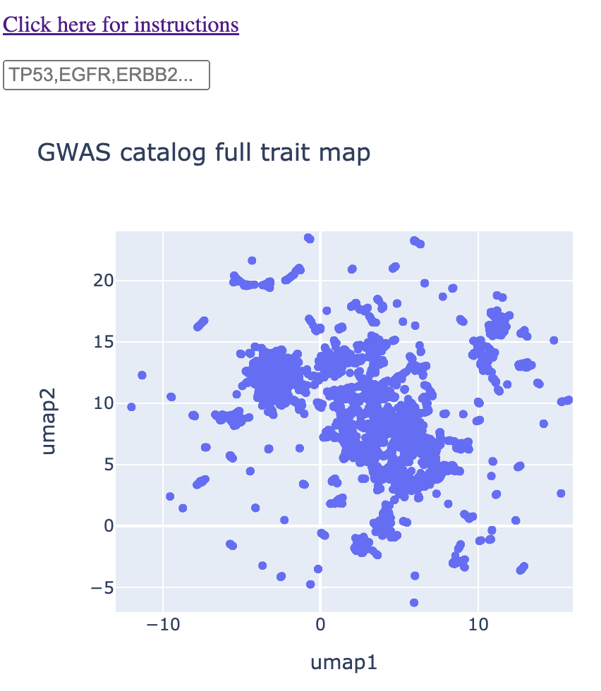
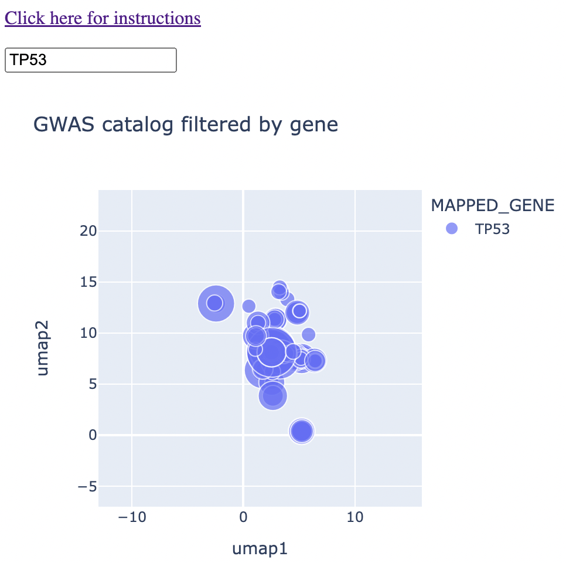
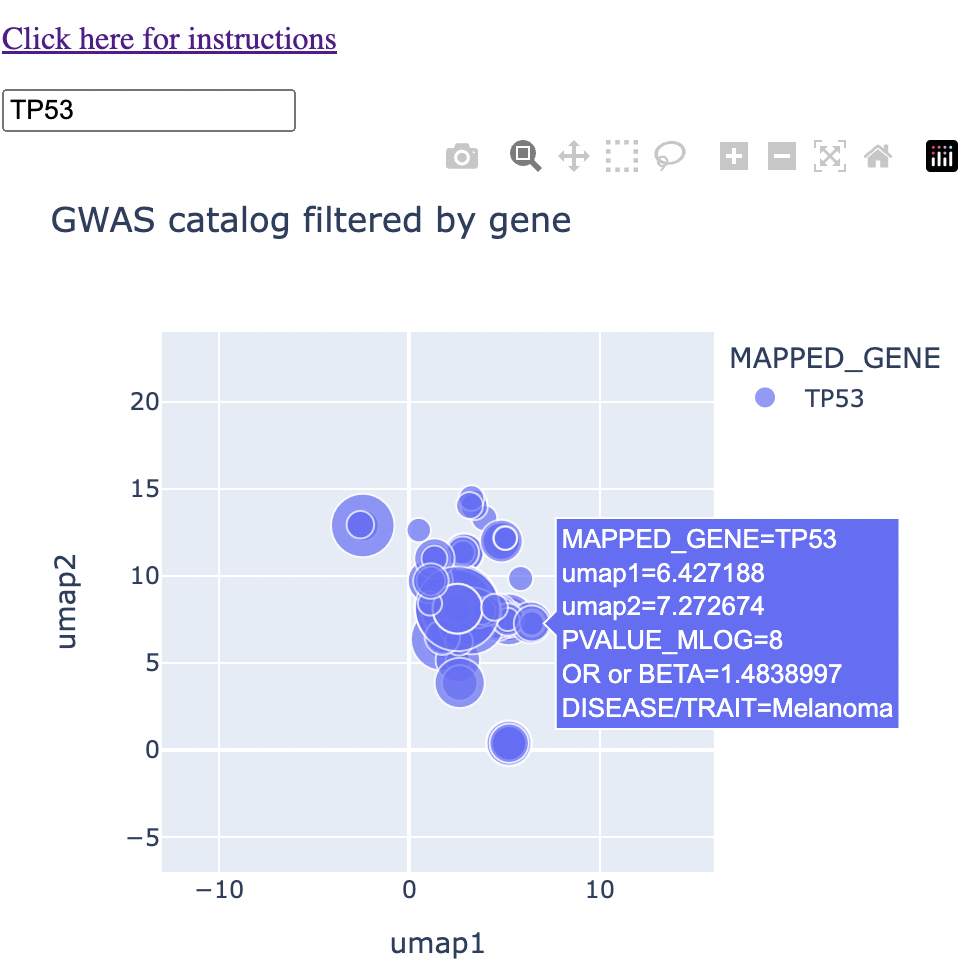
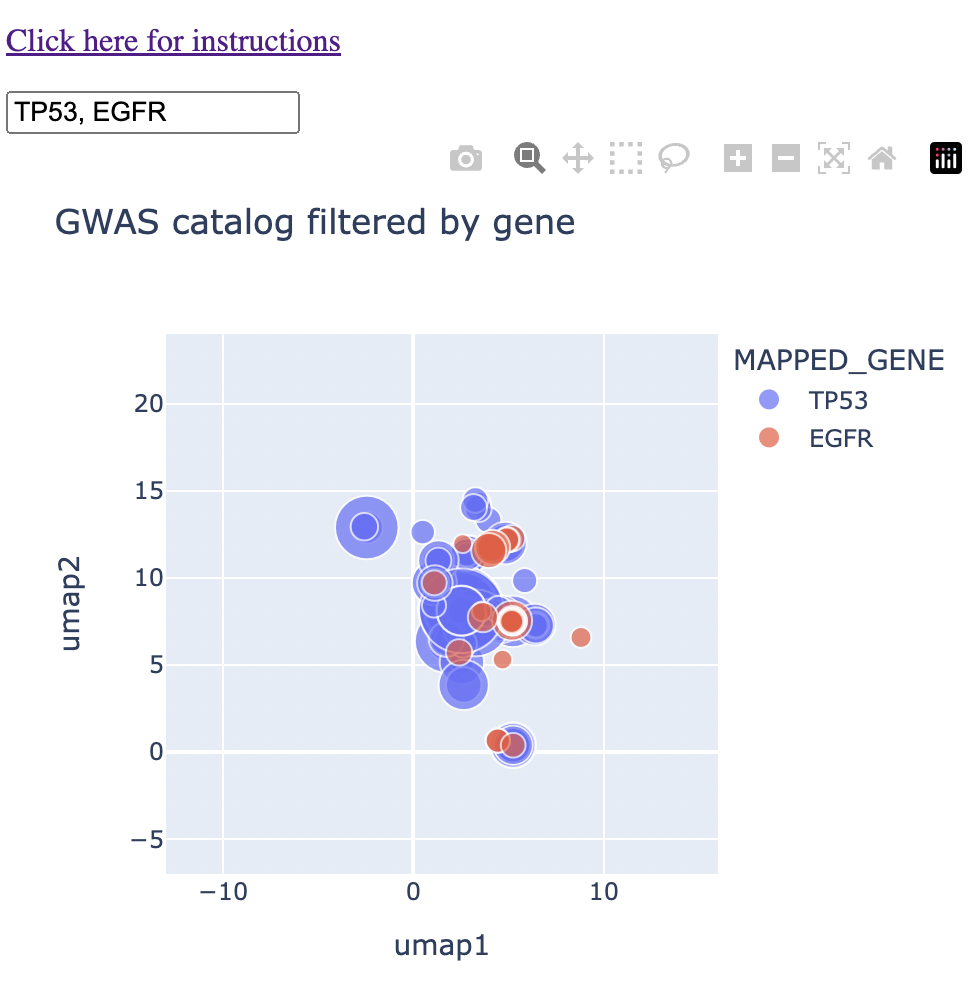
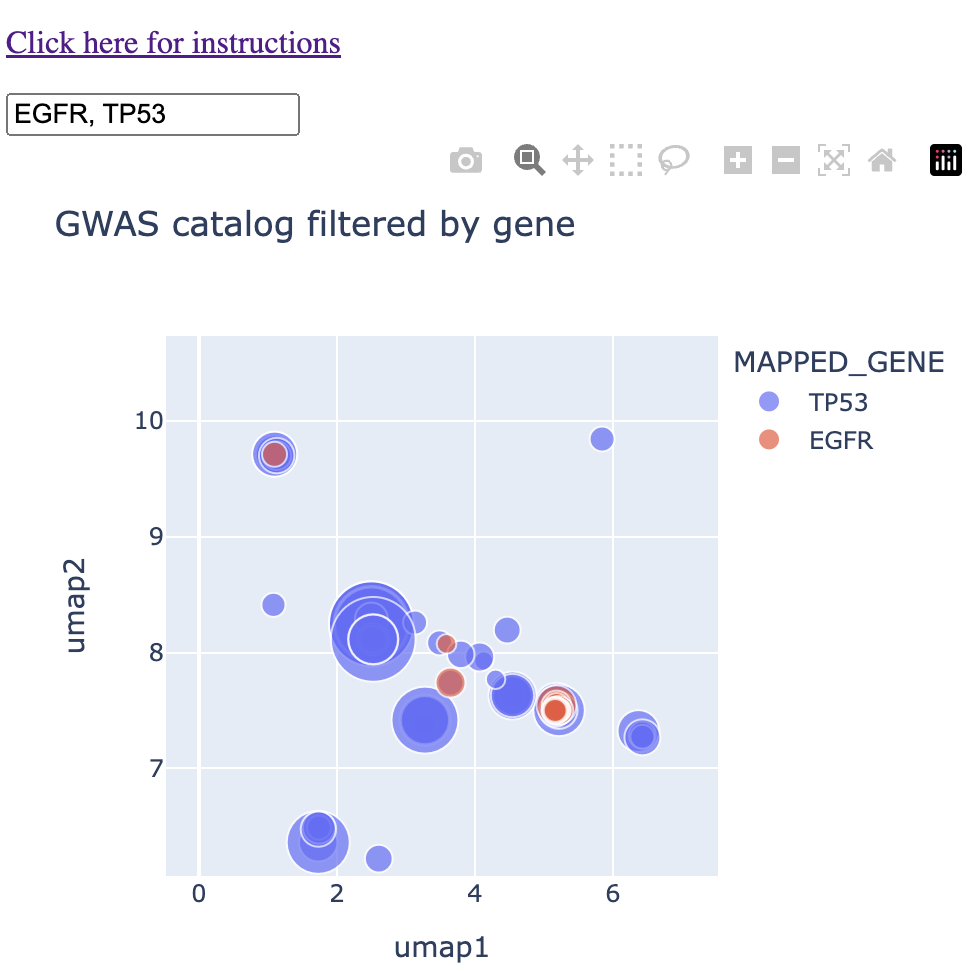
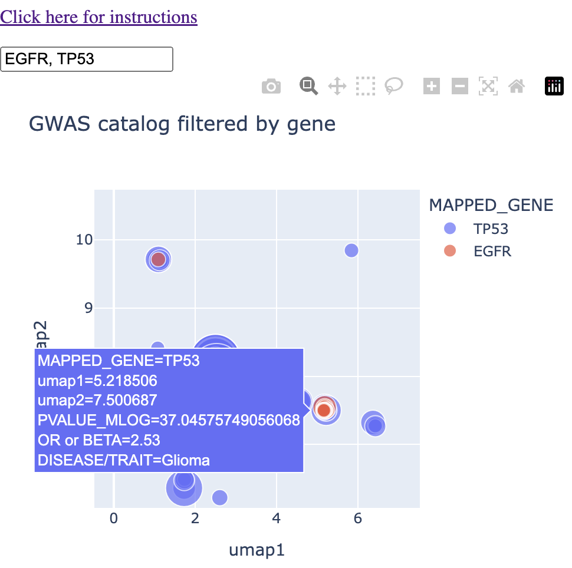
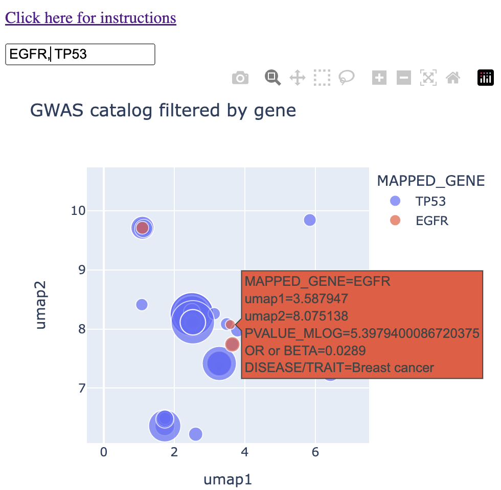
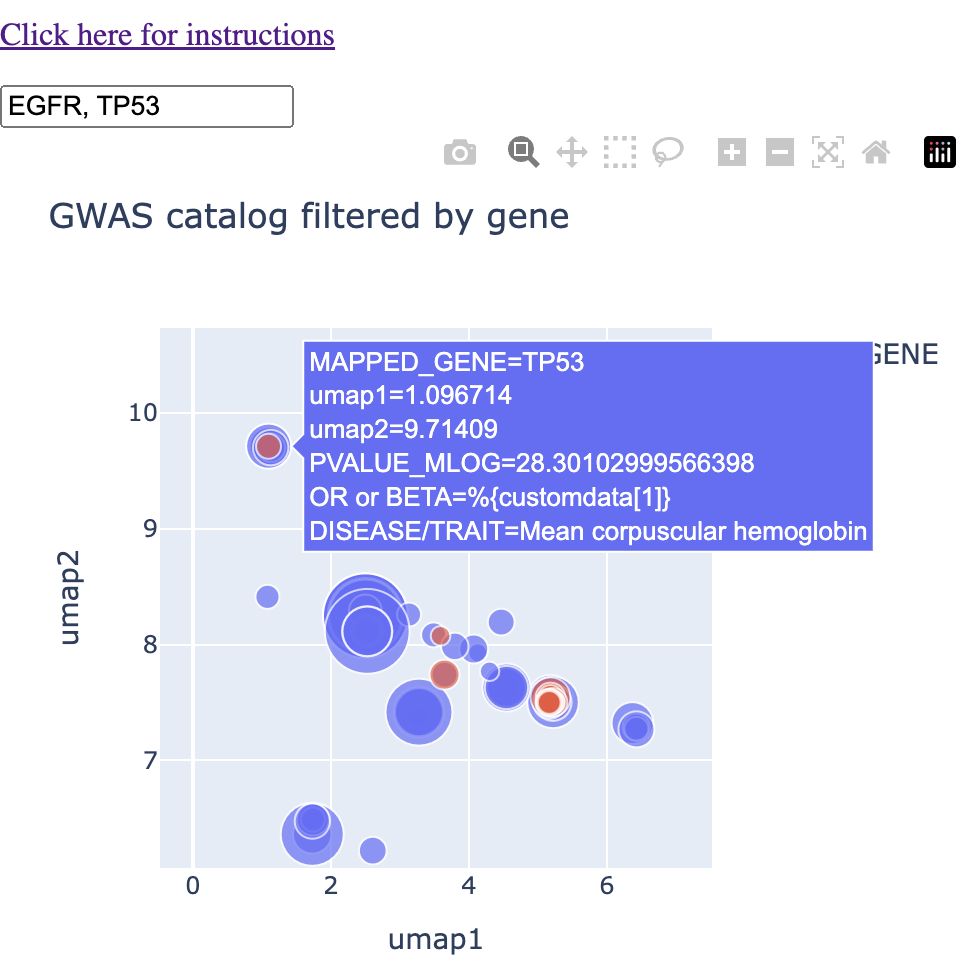

The context problem in Bioinformatics
Introduction
The first biology lab I worked in, as a lab tech prior to grad school, was a classical mouse genetics lab where I was schooled in the art of reductionism. It was a lab where the primary struggle was to get as much data as possible. Each datum would be rigorously analyzed. We would spend hours in lab meeting arguing over a single chart.
When I started grad school in 2011, the buzzword "systems biology" was just starting to take hold. Genomics papers were being published at a faster and faster rate (see the third line graph in my article). Suddenly we had more data than we knew what to do with. When I joined the Nolan Lab in 2012, it was a similar struggle, but now at the single-cell level, with CyTOF. (As a side note, I remember with this explsion of data naively thinking that the cure for cancer, or at least a good number of cancers, was right around the corner.)
The rigorous analysis of each data point that I was used to in my first lab was no longer possible, at least with the human brain. Ok fine, we'll just do "bioinformatics" on it. Except it's 2012 and CyTOF is completely new. There are no pre-existing R packages and python libraries to analyze it. I'm not going to pretend that I was part of this inital bioinformatics push. At this point, I was a wet-lab biologist who barely knew what a t-test was. The bioinformatics training would come later.
The point is that for this initial bioinformatics push, both wet-lab and dry-lab skills were needed. Sometimes it was teams of experts debating in lab meeting on the right path to go. I slowly began to see that most of these students and postdocs were trained in both, as Garry initially told me that his lab members are ultimately emerge as hybrids. Either way, the simple act of being in the room while these debates were taking place was enough for me to realize the value of being a "hybrid" wet-lab and dry-lab biologist. This might be basic common sense now , but at the time it was not.
What does the hybrid biologist bring to the table? For every "systems level" problem, they can identify the tool for the job. On the flip side, for every new solution, they can identify the proper use case. CyTOF's popularity came largely from Garry Nolan seeing the technology early on, seeing immunophenotyping as a use case, and bringing two of the first machines to the lab (One of had a serial number the likes of 0000-0000-0002).
In sum, hybrid biologists are constantly solving the "context problem", which I will define below. After defining the problem, I'll present an algorithmic solution to a use case of the context problem in GWAS Catalog analysis.
Context problem definition
The context problem is any instance where you have (oftentimes a lot of) data that has not yet been converted into useful insights, to use data science terms.
One might say to just go analyze it. Ok, done. Here are 990 biaxial plots from your 45 parameter CyTOF data. Oh, it's not actionable? It won't fit into a nice set of figures? There is no bioloigcal story that can be immediately gleaned from these 990 biaxial plots?
If we take the above paragraph at face value, we can re-frame the context problem as a (lossy) data compression problem. In the case of the initial CyTOF datasets, it was the conversion of 990 biaxial plots into a single figure (intially minimum spanning trees, and later t-SNE and UMAP maps).
Some of data compression is algorithmic. UMAP and similar algorithms convert high dimensional data into XY coordinates so you can view it as a map. Some of it is feature selection. For example, the biologist says that only this piece of the data is relevant for the project. You can ignore the rest.
Use case: GWAS catalog
What traits to two or more genes share?
Let's consider a use case that I've been dealing with for the past few years in my client work. I want to know what diseases or traits are shared between two or more genes that showed up in the data (eg. top 50 differentially expressed genes in a RNA seq dataset).
What I was doing for a long time was taking the GWAS catalog, downloading the raw data, and turning it into a trait-gene graph using igraph or Neo4J, and then visualizing the mutual traits between the two or more genes.
While this approach is valuable and provides both nice insights and visuals, you're still stuck with oftentimes a number of similar diseases that are not exact (eg. gene 1 is associated with cognitive function and gene 2 is associated with Alzheimer's disease, but you yourself have to make the connection between the traits). One is fully capable of doing this, but it gets tricky when each gene is associated with many traits. It becomes an exercise of staring at a list and looking for commonalities between traits.
In other words, my current solutions still left me overwhelmed with the amount of data I had to properly put in context. If only there were a way in which one could easily type in a list of genes and quickly get a feel for what "trait contexts" they shared rather than the names of the traits themselves. Perhaps if there were a map of sorts where cognitive traits showed up in the same region and cancer showed up in a different region.
I already made such a map (for you to use) as a solution to the news feed instance of the Scrolling Problem, where I used a NLP (insert obligatory buzzword: AI) model to map news article titles by context to the user has a bit more control over their feed. This approach is relevant here.
My mapmaking protocol
The tools needed to convert text to maps are open source and readily avilable if you know how to code. My protocol revolves around the use of sentence tranformer models based on the BERT language model (there are alternatives, but this one works well enough and is open source). The specific model I use, all-mpnet-v2 takes any text up to 512 words long and converts it into a 768 element vector. Broadly speaking, you can think of this high-dimensional "context space." Data scientists are used to operating with high-dimensional data like this. We know how to program computers to understand this type of data. However, for it to be human readable, we have to somehow turn these 768 dimensional coordinates into a simple XY plane that we're used to.
That's where UMAP comes in. It is a non-linear dimension reduction algorithm. It takes each 768 dimensional vector and converts it into a 2 dimensional vector. Vectors (texts) that are similar to each other in the 768 dimensional space will be near each other in 2 dimensions. In other words, you end up with a map, where each point on the map is a text you care about. A text that would otherwise show up as part of your endless scrolling ritual. Now you have a bit more control, as your feed is now a map. UMAP is by no means perfect. You can't perfectly compress 768 dimensions without losing information, but you'll be able to see in later sections that it is good enough to be useful in our goal of solving the scrolling problem.
There are other technicalities for the interested user (warning: jargon coming). One can do a preliminary step of determining the effective dimensionality of the data by determining how many principal components explain 95% of the variance. In my experience so far, it's roughly 1/3 of the total dimensions. This could increase both speed and accurracy given you're operating with more signal and less noise.
The map must be interactive and clickable. I'll get into this later, but I'm using the plotly package to produce such maps. The best practices (in my domain) for clickable "maps" come from flow cytometry analysis, which involve drawing "gates" around populations of interest.
Viewing GWAS traits as a map
I downloaded the GWAS catalog ("All associations v1.0") and obtained all unique traits (column: DISEASE/TRAIT). I used these as input to the all-mpnet-base-v2 model within the sentence-tranformers python package. This gave me a 768 dimensional vector for each unique trait. I then ran UMAP on the 768 dimensional vector space, converting it into an XY coordinate plane. The end result was the following map, which is the first map the user sees in the web app:

The rest of the method is an exercise in having UMAP coordinates for each trait. The color of the points correspond to the gene name and the size of the points coorespond to the -log10(p-value). Thus, when the user types in a given gene or genes, the map is immediately subsetted by the gene(s) along with the p-value information. More information can come from hovering over the points. An example is below:

And and example with hover text:

What trait CONTEXT does two or more genes share?
My grad school education was in cancer biology, so let's look at two genes very relevant to cancer: P53 (or TP53) and EGFR. Because these genes have been well-studied, we'll be able to do sanity checks as we go.
So first we type in TP53 and EGFR into the map to see both how each gene falls on the map and where there is potential overlap. I typed "1" into the search bar too, which gives you the two genes in the context of all diseases.

We can see that there is already a bit of overlap. Let's zoom in to the middle and see where the overlap is.

We see a couple of spots with direct overlap. Hovering over these regions of overlap, we find one that we expect: glioma/glioblastoma.

I'll note that in this instance, glioma, glioblastoma, and non-glioblastoma glioma formed this particular cluster, saving me a step in finding and connecting all glioma-like traits myself.
In another region of the map, I found overlap between the two genes in "breast cancer." I'll note that this cluster grouped together breast cancer, invasive breast cancer, and interestingly directly east of that, prostate cancer. (For my readers who have used the GWAS catalog in the past, I'll acknowledge that the standard best practice is to threshold the p-values by 10-8, which was not done below. I leave this example here mainly because of the interesting observation of prostate cancer being grouped next to breast cancer).

Finally, in the northwest of our field of view, I found overlap in the trait "mean corpuscular haemoglobin." I was not aware of any connection between these two genes and haemoglobin. I note that this cluster had P53 associated with "mean corpuscular haemoglobin" and EGFR associated with "mean corpuscular haemoglobin concentration." I'll note also that "glycated haemoglobin levels" fall into this cluster.

Putting it all together, we're no longer asking questions about shared traits. We're asking questions about shared context. P53 and EGFR share the contexts of glioma, breast cancer, and haemoglobin levels. These contexts settle in different regions of the map, and within the contexts, we have various traits that are lexically similar. Overall, this context-centric approach makes it much easier to handle the amount of data that can come out of the GWAS catalog when you're querying it.
Conclusions and future directions
The context problem in bioinformatics is a very broad problem, which itself has many different contexts. My map-based solution works for instances where the output of a given analysis or query is a list of text, that the user would otherwise have to derive contex from in this format.
We used the map as a solution to a GWAS Catalog analysis-specific context problem. I'm also using this to analyze GO terms and pathways that come out of gene set enrichment analysis (specifically with g:Profiler) . I don't have this as a web app yet, simply because I'm trying to decide whether to make it more of a BioConductor package, simply because I use it as a step in my gene-to-context pipelines.
This problem is of course related to the scrolling problem in that both deal with a deluge of text-based data that the user has to parse in some way. The context problem deals with output in text list format, and the scrolling problem deals with data in the form of continuous feeds.
There are many more places where the context problem could be solved as I did here, and I encourage everyone who reads this to play around with these NLP models with this article in mind.